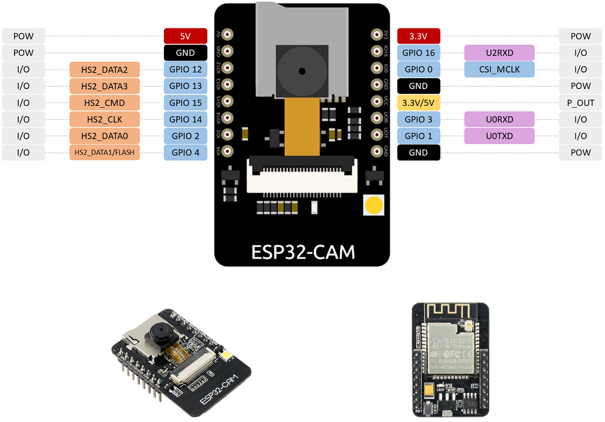
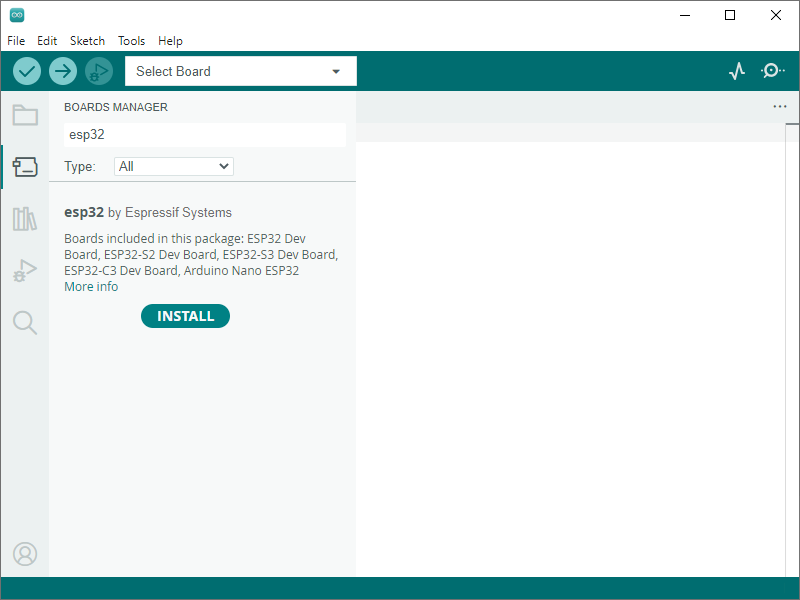

ESP32-CAM es un dispositivo con conectividad Wifi y Bluetooth y pines GPIO que, además, lleva integrada una cámara de video (2 MPx) y una ranura para tarjeta MicroSD (hasta 4Gb), donde se pueden almacenar fotos o videos.
Aplicaciones típicas:
. Tomar de fotografías.
. Streaming de video.
. Reconocimiento facial.
. Detector de movimiento.
El ESP32 CAM tiene menos pines GPIO que un módulo ESP32 convencional, ya que muchos de esos pines se utilizan para la gestión de la cámara y el conector microSD, aun así hay 9 pines GPIO disponibles.
Además, este dispositivo no cuenta con puerto USB, que comúnmente es la vía utilizada para cargar los programas a los distintos dispositivos ESPxx, Arduino, etc.
Al no contar con puerto USB debemos utilizar 6 pines para poder trabajar con el ESP32-CAM, dos pines para establecer el modo de funcionamiento del ESP32 CAM, dos para transmitir datos TX/RX entre ordenador y ESP32-CAM, y dos para alimentar la placa.

CARACTERÍSTICAS
- Módulo ESP32-S
- Wi-Fi: 802.11b/g/n/e/i
- Seguridad: WPA/WPA2/WPA2-Enterprise/WPS
- CPU: 32-bit CPU de bajo consumo (2 cores).
- Velocidad de reloj: hasta 160 MHz.
- Bluetooth: Bluetooth 4.2 con BLE.
- Interfaces: UART, SPI, I2C and PWM. Hasta 9 pines GPIO
- RAM: 520 KB SRAM, externa 4 MB PSRAM
- Soporte microSD: hasta 4GB
- Múltiples modos de reposo (sleep modes):
- Deep-sleep: máximo bajo consumo que puede alcanzar 6mA@5V.
- Moderm-sleep: hasta 20mA@5V.
- Light-sleep: hasta 6.7mA@5V.
- Firmware actualizable a través de OTA (Over-The-Air).
- Flash incorporado.
- Voltaje de alimentación: 5 V.
- Conector de antena externa: en situación de comunicaciones poco estables se puede añadir una antena externa.
- Cámara:
- Soporte para cámaras OV2640 y OV7670.
- JPEG (OV2640 soportada), BMP, GRAYSCALE.
- Sensor 2 Megapixel.
- Resolución UXGA 1622×1200 px.
- Transferencia de imagen entre 15 y 60 FPS.
Antes de comenzar a programar se debe configurar el entorno Arduino para poder compilar y cargar los programas adecuadamente en el ESP32.
Iniciar Arduino IDE, abrir el menú File-->Preferences....

Escribir la siguiente URL en la caja de texto Gestor de URLs Adicionales de Tarjetas: https://dl.espressif.com/dl/package_esp32_index.json

Abrir el menú de la izquierda BOARDS MANAGER
Buscar en la lista el gestor del módulo ESP32.
Hacer click en el botón INSTALL.

Una vez completa la instalación, cerrar Arduino IDE y abrir nuevamente. Las librerías y ejemplos instalados estarán disponibles.
Abrir el menú Herramientas-->Placa y seleccione la placa AI Thinker ESP32-CAM.
6.1 Ejemplo CameraWebServer